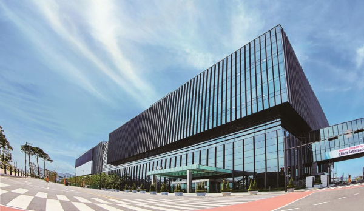

[이코노미스트 선모은 기자] 삼성 라이프사이언스 펀드가 차세대 신약 개발 기술을 연구하는 국내 기업에 투자한다. 이 기업과 공동 연구도 진행해 국내 신약 개발 생태계도 활성화한다는 구상이다.
13일 관련 업계에 따르면 삼성물산과 삼성바이오로직스, 삼성바이오에피스가 참여하고 있는 삼성 라이프사이언스 펀드는 네 번째 투자처로 국내 바이오 기업인 에임드바이오를 선정했다. 회사는 에임드바이오에 지분 투자할 계획이며 구체적인 투자 규모는 밝히지 않았다.
에임드바이오는 2018년 설립된 항체-약물 중합체(ADC) 개발 기업이다. 삼성의료원 연구팀의 바이오 플랫폼 연구 성과를 활용한 독자 기술로 파이프라인을 구축했다. 교모세포종과 방광암 치료제 등을 개발하고 있으며 일부 파이프라인은 내년 임상 단계에 진입한다.